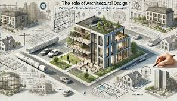

Sobre la carrera
La carrera de Arquitectura se enfoca en la planificación, diseño y construcción de edificios y otros espacios.
Galería



La carrera de Arquitectura se enfoca en la planificación, diseño y construcción de edificios y otros espacios.